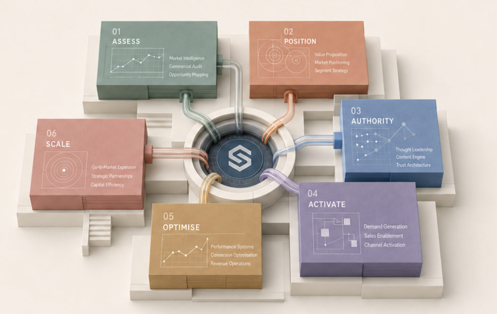

Evidence before opinion.
Diagnosis is grounded in what buyers, competitors and performance signals reveal.
The Sedisson Method™
A sequenced methodology for turning commercial complexity into a system that can be understood, operated and improved.

Interactive framework
Skipping diagnosis weakens positioning. Skipping positioning weakens authority. Scaling before the system works only expands inefficiency.
01 / 06
Every successful strategy begins with accurate diagnosis.
We develop a complete understanding of the business, market, competitors, commercial maturity, customer profile and growth objectives.
Operating principles
Diagnosis is grounded in what buyers, competitors and performance signals reveal.
Activation begins only after the market has reasons to believe.
Every campaign must improve the commercial model—not simply fill a report.
Apply the method